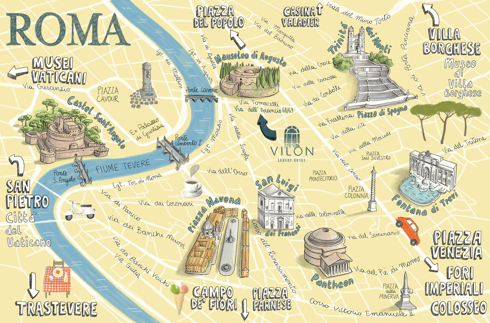

Bienvenidos a la cuna de la historia
Roma no es solo la capital de Italia; es un museo a cielo abierto donde el pasado y el presente se cruzan en cada esquina. Con más de 2.700 años de historia, esta metrópolis a orillas del río Tíber ha sido el corazón del Imperio Romano, el centro de la cristiandad y el hogar de algunos de los artistas más brillantes de todos los tiempos, como Miguel Ángel y Bernini.
¿Por qué la llamamos la "Ciudad Eterna"?
El mito dice que Roma fue fundada en el año 753 a.C. por los gemelos Rómulo y Remo. Desde entonces, ha sobrevivido a la caída de imperios, guerras y el paso de los siglos, reinventándose constantemente sin perder jamás su grandeza. Es un lugar donde podés caminar junto a un templo antiguo, cruzarte con una iglesia barroca y terminar cenando en una trattoria moderna, todo en la misma cuadra.
Un viaje a través del tiempo
Explorar Roma es descubrir sus múltiples facetas:
La Roma Antigua: El imponente Coliseo, el Foro Romano y el Panteón, testigos del poder del mayor imperio de la antigüedad.
La Roma Vaticana: El centro de la fe católica, hogar de la Basílica de San Pedro y los impresionantes Museos Vaticanos.
La Roma Barroca: Plazas vibrantes como la Piazza Navona y la icónica Fontana di Trevi, donde lanzar una moneda asegura tu regreso.
Hoy en día, Roma combina toda esa riqueza histórica con el caos encantador de la vida italiana contemporánea, su gastronomía de primer nivel y una atmósfera única que tenés que vivir al menos una vez en la vida.
Mapa de Roma
Para orientarte en esta ciudad tan rica en historia, te dejo un mapa que destaca los principales puntos de interés, desde el Coliseo hasta la Fontana di Trevi. ¡No te pierdas ningún rincón de esta maravilla arquitectónica!
